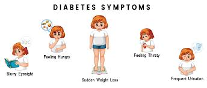
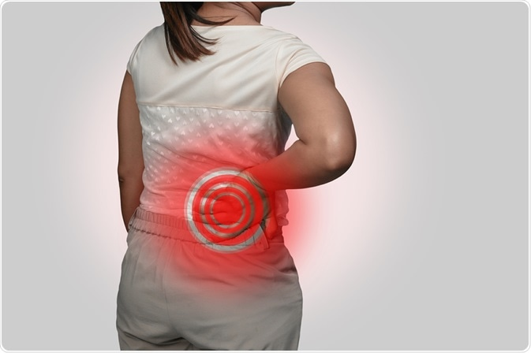
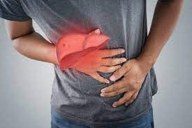
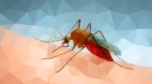

Diabetes
Diabetes mellitus, commonly known as diabetes, is a metabolic disease that causes high blood sugar. The hormone insulin moves sugar from the blood into your cells to be stored or used for energy. With diabetes, your body either doesn’t make enough insulin or can’t effectively use the insulin it does make.
A rare condition called diabetes insipidus is not related to diabetes mellitus, although it has a similar name. It’s a different condition in which your kidneys remove too much fluid from your body.
Each type of diabetes has unique symptoms, causes, and treatments. Learn more about how these types differ from one another.
Click here, to get report

Kidney
The kidneys filter waste and excess fluid from the blood. As kidneys fail, waste builds up.
Symptoms develop slowly and aren't specific to the disease. Some people have no symptoms at all and are diagnosed by a lab test.
Medication helps manage symptoms. In later stages, filtering the blood with a machine (dialysis) or a transplant may be required.
Click here, to get report

Liver
Liver disease is any disturbance of liver function that causes illness. The liver is responsible for many critical functions within the body and should it become diseased or injured, the loss of those functions can cause significant damage to the body. Liver disease is also referred to as hepatic disease.
Click here, to get report

Malaria
A disease caused by a plasmodium parasite, transmitted by the bite of infected mosquitoes.
The severity of malaria varies based on the species of plasmodium.
Symptoms are chills, fever and sweating, usually occurring a few weeks after being bitten.
People travelling to areas where malaria is common typically take protective drugs before, during and after their trip. Treatment includes antimalarial drugs.
Click here, to get report
Pneumonia
Infection that inflames air sacs in one or both lungs, which may fill with fluid.
With pneumonia, the air sacs may fill with fluid or pus. The infection can be life-threatening to anyone, but particularly to infants, children and people over 65.
Symptoms include a cough with phlegm or pus, fever, chills and difficulty breathing.
Antibiotics can treat many forms of pneumonia. Some forms of pneumonia can be prevented by vaccines.
Click here, to get report
Skin diseases
Common Skin Conditions
Acne (Acne vulgaris) Acne, the most common skin disorder in the U.S., can be a source of anxiety for every teen.
Atopic dermatitis (Eczema) Atopic dermatitis is one of the most common forms of eczema seen in children.
Shingles (Herpes Zoster)
Hives (Urticaria)
Click here, to get report